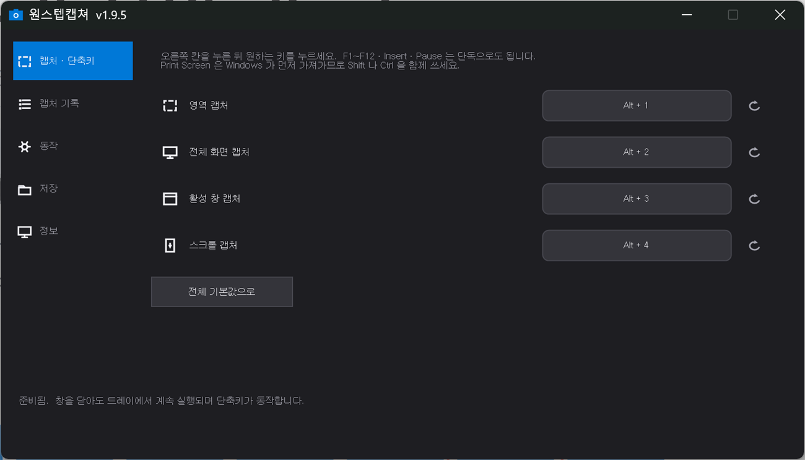

찍은 자리에서 바로 표시합니다
따로 그림판을 열 필요가 없습니다. 캡처가 끝나면 편집 창이 그대로 열립니다.
- 펜 · 형광펜강조할 곳에 바로 긋습니다.
- 사각형 · 화살표짚어줄 곳을 분명하게.
- 모자이크숫자·이름처럼 가릴 것을 가립니다.
- 글자써넣고 끌어서 옮길 수 있습니다.
- 확대 / 축소Ctrl + 휠. 10%~800%.
- 편집본 복사그린 것까지 그대로 붙여넣기.
영역을 고르는 화면
끌면 크기가 실시간으로 보이고, 모서리를 잡아 다시 맞출 수 있습니다. 드래그 없이 그냥 클릭하면 커서 아래 창 전체를 잡습니다. 1픽셀까지 맞춰야 할 때는 Z 키로 확대경을 켤 수 있습니다.

고른 범위만 밝게 남고, 크기와 확대경이 함께 표시됩니다
설치
30초면 끝나고, 관리자 권한이 필요하지 않습니다.
- 1받은 ZIP 파일을 오른쪽 클릭 → 압축 풀기 압축 안에서 바로 실행하면 아무 일도 일어나지 않습니다.
- 2풀린 폴더의
설치.cmd실행 설치가 끝나면 설정 창이 한 번 열립니다. - 3끝났습니다 압축을 푼 폴더는 지워도 됩니다. 창을 닫아도 트레이에서 조용히 기다리며 단축키가 바로 동작합니다.
단축키
설정 창에서 원하는 키로 바꿀 수 있습니다.

설정 창 — 단축키, 저장 폴더, 동작을 여기서 정합니다
믿고 쓰실 수 있도록
처음 받는 프로그램이 무엇을 하는지 알 수 없다는 점이 가장 불편한 부분이라고 생각합니다. 그래서 감추는 것을 두지 않았습니다.
- 프로그램 소스가 배포본 안에 그대로 들어 있습니다
원스텝캡쳐.cs와설치.cmd를 메모장으로 열면 그대로 읽힙니다. 압축하거나 암호화한 부분이 없습니다. - 인터넷에 접속하는 곳이 한 군데뿐입니다 설정 창 [정보] 탭의 [업데이트 확인] 버튼. 누르지 않으면 아무것도 주고받지 않고, 누를 때도 최신 판 번호만 확인합니다. 보내는 데이터가 없습니다.
- 설치에 관리자 권한이 필요하지 않습니다 시스템 폴더를 건드리지 않고 내 사용자 폴더 안에만 설치됩니다. 레지스트리는 [Windows 설정 > 앱] 목록에 등록하는 항목 하나만 쓰고, 제거할 때 같이 지워집니다.
이 프로그램이 하지 않는 것
- 사용 기록·통계·개인정보 수집
- 광고 표시, 다른 프로그램 끼워 설치
- 계정 만들기, 로그인 요구
- Windows 설정 변경, 시스템 폴더에 파일 설치
- 말없이 알아서 업데이트
받은 파일이 진짜인지 확인하려면
ZIP 파일이 있는 폴더에서 명령 프롬프트를 열고:
certutil -hashfile OneStepCapture-Setup.zip SHA256나온 값이 아래와 같아야 합니다.
728B2666B6E14E25F72F4DDEE579B0B818925BD4E9DF2C6408DC809396B9BB69판이 바뀌면 이 값도 바뀝니다. (현재 v1.9.6 기준)
백신이 한 번 물어볼 수 있습니다
Windows 보안 기능(Smart App Control)이 서명되지 않은 .exe를 막기 때문에,
이 프로그램은 Microsoft가 서명한 PowerShell을 통해 실행되는 형태로 배포됩니다.
백신이 이 방식 자체를 낯설게 보는 경우가 있습니다.
숨기려고 고른 방식이 아니라, 서명 없는 실행 파일이 아예 실행되지 않아서 택한 방식입니다. 대신 위에 적은 대로 소스 전체를 열어 확인하실 수 있고, 해시로 파일이 바뀌지 않았는지 대조하실 수 있습니다.
제거
시작 메뉴의 [원스텝캡쳐 제거]를 실행하시면 됩니다. 설정과 캡처 기록까지 함께 정리되고, 저장해둔 이미지 파일은 지워지지 않습니다.
사용 조건
받은 파일 안의 LICENSE.txt에 적혀 있습니다. 요약하면:
- 개인적·업무적 용도로 자유롭게 사용하실 수 있습니다.
- 캡처한 결과물에 대한 권리는 전적으로 사용자에게 있습니다.
- 재배포와 판매는 허용되지 않습니다. 필요하면 이 페이지 주소를 알려주세요.